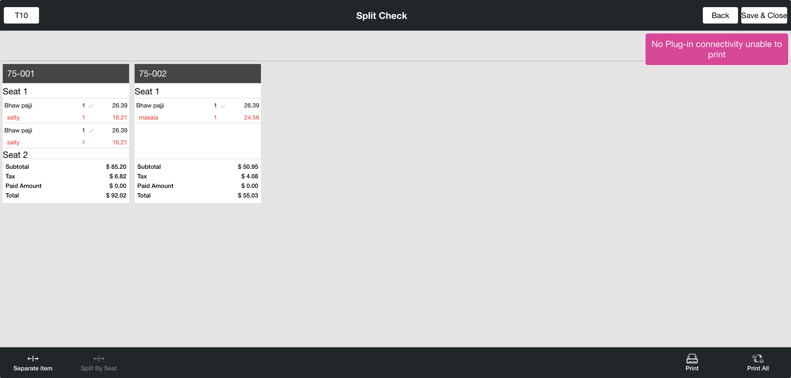

-
Ask Seat Number Feature
6:30:06 pm / 00:02:26:895 Fail
Ask Seat Number Feature
01.22.2024 6:30:06 pm 01.22.2024 6:32:33 pm 00:02:26:895 · #test-id=1FailVerify the Split checkGiven I'm logged inAnd I closed the order type windowAnd I click AllAnd I click Table Layout tabAnd I select Menu For Dine order type as "North Indian dish" for split CheckAnd I click Finish buttonAnd I click Check Stats tabThen I should see active checkAnd I click Table Layout tabAnd I click the Split Button from the Table Layout ScreenAnd I click split check buttonWhen I click the check from the table layoutThen I should see the Split check screenWhen I verify the Active check with split checkAnd I click Add Button on the split check screenThen I should see new check added on the split check screenAnd I click the menu on the split check screenAnd I click new check added on the split check screenWhen I verify the menu is moved to the added check seatAnd I click new check added on the split check screenAnd I click print button in the split check screenThen I should see please save all the changes to print popupAnd I click yes to open Close Till ScreenWhen I verify the check is splitted and check number is increasedAnd I click print All Button in the split check screenStep skippedAnd I click the menu on the split check screenStep skippedAnd I click Seperate item buttonStep skippedAnd I select the number of split item "2" for Split checkStep skippedAnd I click the Continue buttonStep skippedThen I should see menu has separated as "2"Step skippedAnd I click the save & close button on the split screenStep skippedThen I Should get back to the Order ScreenStep skippedWhen I verify primary check is opened after split check is doneStep skippedAnd I click Cash button for Complete SaleStep skippedAnd I click Exact button on the cash pop-upStep skippedAnd I click Enter Button on the cash pop-upStep skippedAnd I click Table Layout tabStep skippedAnd I click Check Stats tabStep skippedWhen I verify the splitted check is available in active checks tabStep skippedAnd I click Table Layout tabStep skippedAnd I select Menu For Dine order type as "North Indian dish" for split CheckStep skippedAnd I click Finish buttonStep skippedAnd I click Check Stats tabStep skippedThen I should see active checkStep skippedAnd I click Table Layout tabStep skippedAnd I click the Split Button from the Table Layout ScreenStep skippedAnd I click split check buttonStep skippedWhen I click the check from the table layoutStep skippedThen I should see the Split check screenStep skippedWhen I verify the Active check with split checkStep skippedThen I should see seat available in the split checkStep skippedAnd I click split by seat in the split check screenStep skippedThen I should see new check added on the split check screenStep skippedAnd I click the menu on the split check screenStep skippedAnd I click new check added on the split check screenStep skippedWhen I verify the menu is moved to the added check seatStep skippedAnd I click new check added on the split check screenStep skippedAnd I click print button in the split check screenStep skippedThen I should see please save all the changes to print popupStep skippedAnd I click yes to open Close Till ScreenStep skippedWhen I verify the check is splitted and check number is increasedStep skippedAnd I click print All Button in the split check screenStep skippedAnd I click the menu on the split check screenStep skippedAnd I click Seperate item buttonStep skippedAnd I select the number of split item "2" for Split checkStep skippedAnd I click the Continue buttonStep skippedThen I should see menu has separated as "2"Step skippedAnd I click the save & close button on the split screenStep skippedThen I Should get back to the Order ScreenStep skippedWhen I verify primary check is opened after split check is doneStep skippedAnd I click Cash button for Complete SaleStep skippedAnd I click Exact button on the cash pop-upStep skippedAnd I click Enter Button on the cash pop-upStep skippedAnd I click Table Layout tabStep skippedAnd I click Check Stats tabStep skippedWhen I verify the splitted check is available in active checks tabStep skippedAnd I click power button in the All Orders screenStep skippedcom.qa.stepdef.Hooks.quit(io.cucumber.java.Scenario)screenshot
-
java.util.UnknownFormatConversionException
1 tests
java.util.UnknownFormatConversionException
1 failedStatus Timestamp TestName Fail 18:32:33 pm When I verify the check is splitted and check number is increased Ask Seat Number Feature.Verify the Split check.When I verify the check is splitted and check number is increased
-
@AskSeatCount018
1 tests
@AskSeatCount018
1 failedStatus Timestamp TestName Fail 18:30:06 pm Verify the Split check Ask Seat Number Feature.Verify the Split check
Started
Jan 22, 2024 06:30:06 pm
Ended
Jan 22, 2024 06:32:33 pm
Features Passed
0
Features Failed
1
Features
Scenarios
Steps
Timeline
Tags
| Name | Passed | Failed | Skipped | Others | Passed % |
|---|---|---|---|---|---|
| @AskSeatCount018 | 0 | 1 | 0 | 0 | 0% |